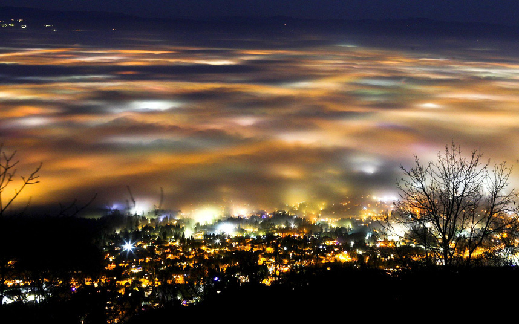

Pécs
- December 19., csütörtök: A csütörtöki napon többnyire borongós idő várható, de délutánra fokozatosan felszakadozik a felhőzet, és időnként a nap is előbújhat. A nappali hőmérséklet 8°C körül alakul, éjszaka pedig 5°C-ra csökken. Csapadék nem várható, de reggelente köd alakulhat ki.
- December 20., péntek: Borult, csapadékos időre számíthatunk pénteken. Egész nap előfordulhat eső, különösen a reggeli és a déli órákban. A nappali hőmérséklet 9°C körül alakul, este viszont 3°C-ra hűl le a levegő. A szél időnként megerősödhet.
- December 21., szombat: Szombaton változóan felhős idő várható, de hosszabb napsütéses időszakok is lehetnek. Az eső esélye alacsony, és többnyire száraz időre számíthatunk. A nappali hőmérséklet 7°C körül alakul, éjszaka pedig 2°C-ra csökkenhet.
- December 22., vasárnap: Vasárnap ismét borongós idő lesz a jellemző, kisebb eső is előfordulhat, különösen a délutáni órákban. A nappali hőmérséklet 6°C körül mozog, éjszaka pedig 1°C-ra csökkenhet. A párás, hűvös idő továbbra is meghatározó lesz.
- December 23., hétfő: A hétfői nap borult és hűvös időt hoz, de eső nem valószínű. A nappali hőmérséklet 5°C körül alakul, míg éjszaka 2°C-ra csökkenhet a hőmérséklet. Szárazabb napra készülhetünk, de a reggeli órákban köd alakulhat ki.
- December 24., kedd: Karácsony előestéjén felhős, párás idő várható, de csapadék nem valószínű. A nappali hőmérséklet 6°C körül alakul, éjszaka pedig 3°C-ra csökkenhet. A reggeli órákban ismét köd képződhet, amely lassan oszlik el.
- December 25., szerda: Karácsonykor részben napos időre készülhetünk, de a felhősödés is jellemző lesz. Az eső esélye minimális, a nappali hőmérséklet 7°C körül alakul, éjszaka pedig 4°C-ra csökkenhet a levegő hőmérséklete.
